> 本文件由 `大数据实验7.pptx` 整理而成；
> 课件本身（.pptx）未收录进本仓库；文中的图片是幻灯片里原有的公式与数据表。
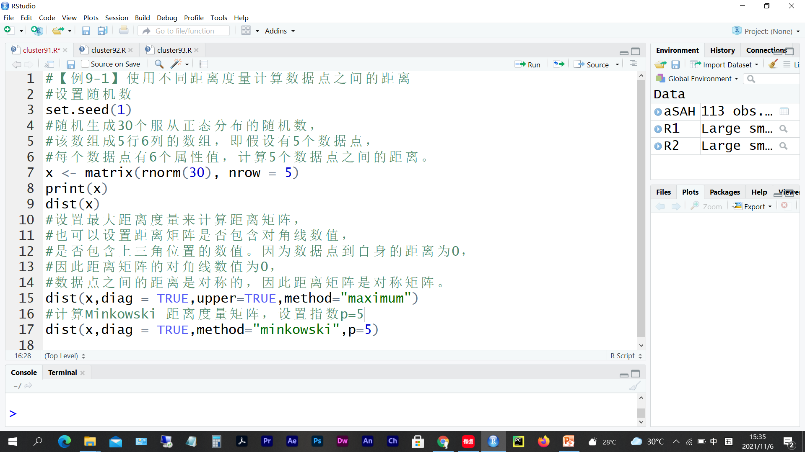
set.seed(1) x = matrix(rnorm(28),nrow = 4) print(x) man_dist <- dist(x, method = "manhattan", diag = TRUE, upper = TRUE) print(man_dist) mink_dist <- dist(x, method = "minkowski", p = 3, diag = TRUE, upper = FALSE) print(mink_dist)
[,1] [,2] [,3] [,4] [,5] [,6] [,7]
[1,] -0.6264538 0.3295078 0.5757814 -0.62124058 -0.01619026 0.91897737 0.61982575
[2,] 0.1836433 -0.8204684 -0.3053884 -2.21469989 0.94383621 0.78213630 -0.05612874
[3,] -0.8356286 0.4874291 1.5117812 1.12493092 0.82122120 0.07456498 -0.15579551
[4,] 1.5952808 0.7383247 0.3898432 -0.04493361 0.59390132 -1.98935170 -1.47075238
1 2 3 4
1 0.000000 6.207524 5.506712 9.001795
2 6.207524 0.000000 8.413823 10.371475
3 5.506712 8.413823 0.000000 8.579801
4 9.001795 10.371475 8.579801 0.000000
1 2 3 4
1 0.000000
2 1.998232 0.000000
3 1.984322 3.606294 0.000000
4 3.562066 3.456987 3.053533 0.000000
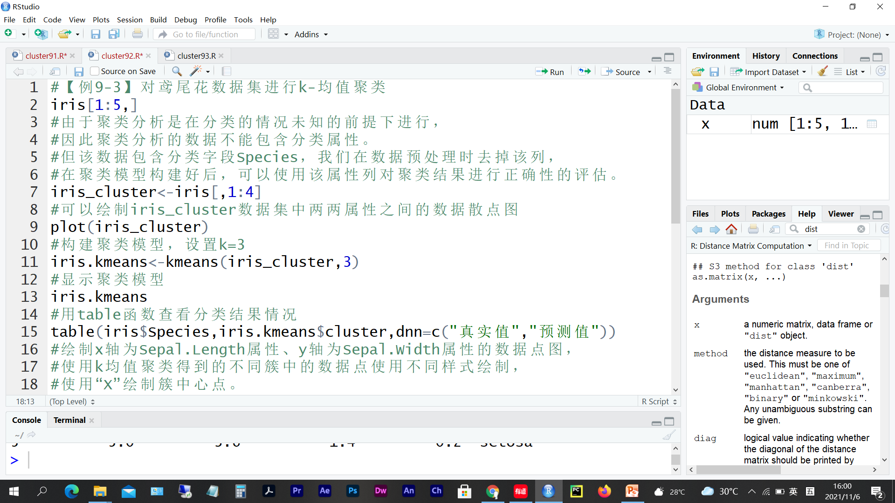
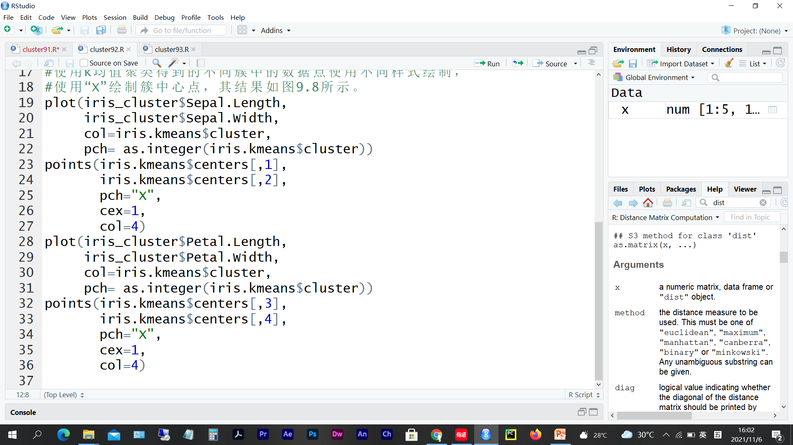
iris <- iris[1:5,]
iris_cluster = iris[,1:4]
plot(iris)
iris.kmeans = kmeans(iris_cluster,3)
iris.kmeans
table(iris$Species,iris.kmeans$cluster,dnn = c('真实值','预测值'))
plot(iris_cluster$Sepal.Length,
iris_cluster$Sepal.Width,
col=iris.kmeans$cluster,
pch= as.integer(iris.kmeans$cluster))
points(iris.kmeans$centers[,1],
iris.kmeans$centers[,2],
pch="X",
cex=1,
col=4)
plot(iris_cluster$Petal.Length,
iris_cluster$Petal.Width,
col=iris.kmeans$cluster,
pch= as.integer(iris.kmeans$cluster))
points(iris.kmeans$centers[,3],
iris.kmeans$centers[,4],
pch="X",
cex=1,
col=4)
K-means clustering with 3 clusters of sizes 1, 2, 2
Cluster means:
Sepal.Length Sepal.Width Petal.Length Petal.Width
1 4.90 3.00 1.4 0.2
2 5.05 3.55 1.4 0.2
3 4.65 3.15 1.4 0.2
Clustering vector:
1 2 3 4 5
2 1 3 3 2
Within cluster sum of squares by cluster:
[1] 0.00 0.01 0.03
(between_SS / total_SS = 91.3 %)
Available components:
[1] "cluster" "centers" "totss" "withinss" "tot.withinss" "betweenss"
[7] "size" "iter" "ifault"
预测值
真实值 1 2 3
setosa 1 2 2
versicolor 0 0 0
virginica 0 0 0
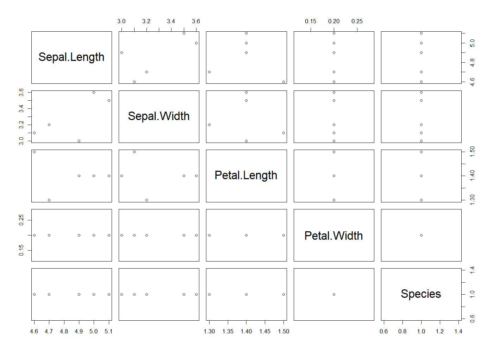
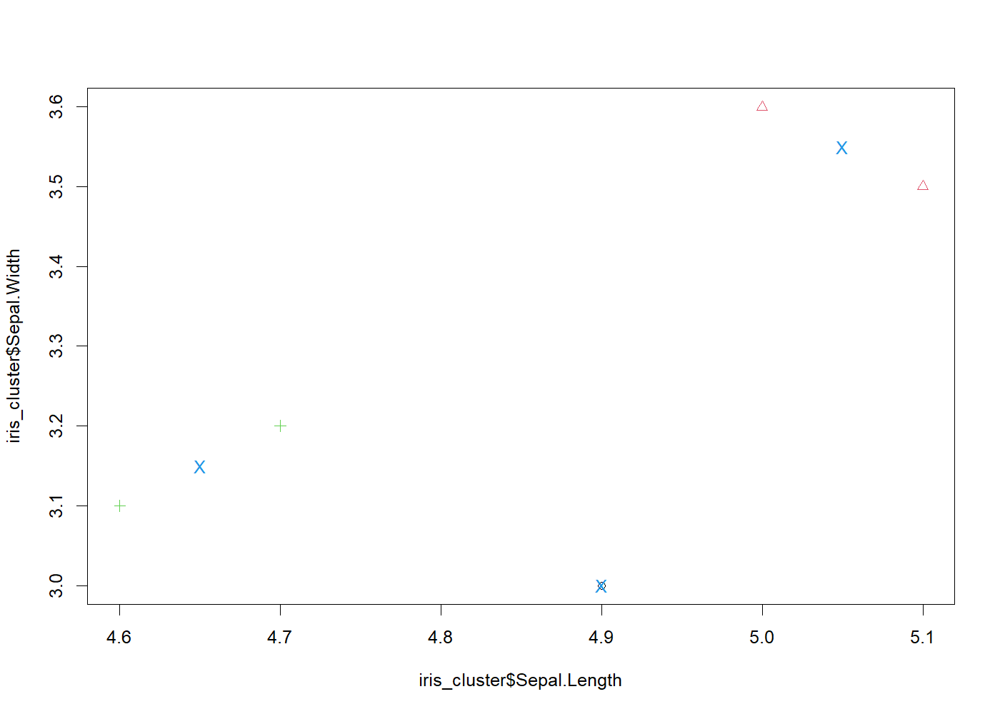
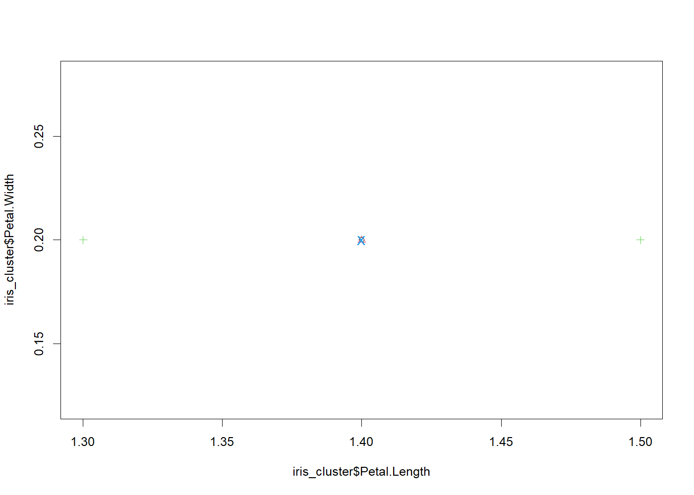
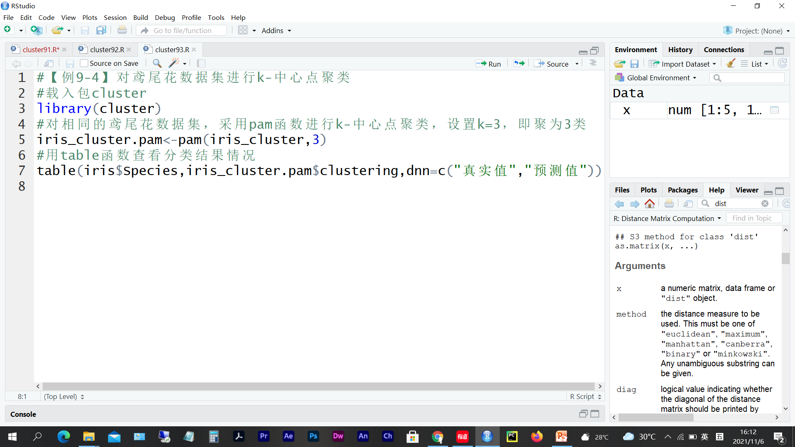
library(cluster)
iris_cluster <- iris[, -5]
iris_cluster.pam = pam(iris_cluster,3)
print(iris_cluster.pam$clustering)
iris$cluster <- iris_cluster.pam$clustering
table(iris$Species,iris_cluster.pam$clustering,dnn = c('真实值','预测值'))
1 2 3 4 5
1 2 3 3 1
预测值
真实值 1 2 3
setosa 2 1 2
versicolor 0 0 0
virginica 0 0 0
if (!requireNamespace("fpc", quietly = TRUE)) {
install.packages("fpc")
}
library(fpc)
data_points <- matrix(c(2, 10, 2, 5, 8, 4, 5, 8, 7, 5, 6, 4, 1, 2, 4, 9), ncol = 2, byrow = TRUE)
colnames(data_points) <- c("x", "y")
set.seed(1)
kmeans_result <- kmeans(data_points, centers = 3)
pam_result <- pam(data_points, k = 3)
plot(data_points, col = kmeans_result$cluster, pch = 19, main = "K-means Clustering")
points(kmeans_result$centers, col = 2:4, pch = 4, cex = 2)
plot(data_points, col = pam_result$clustering, pch = 19, main = "K-medoids Clustering")
points(pam_result$medoids, col = 2:4, pch = 4, cex = 2)
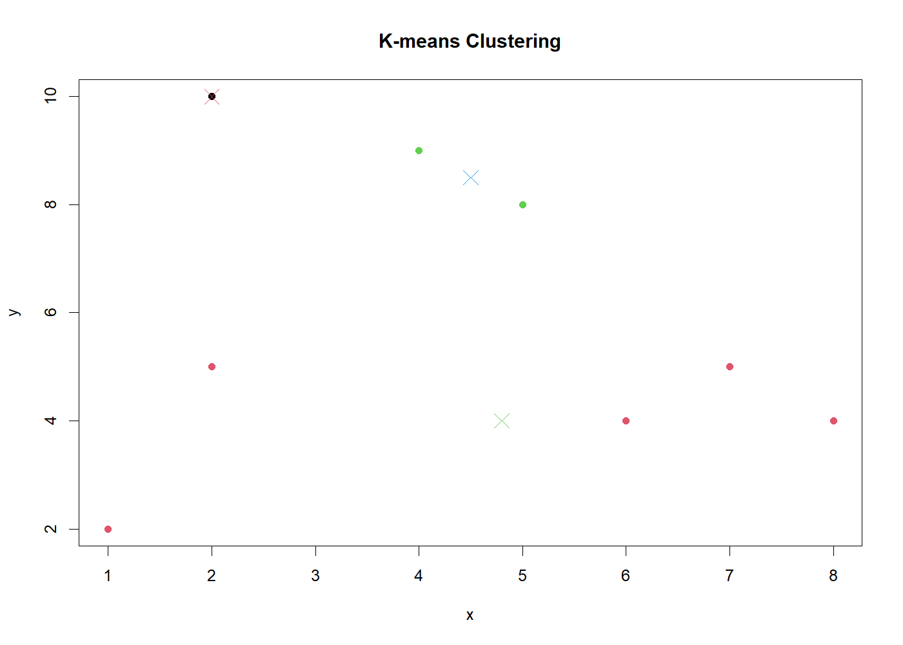
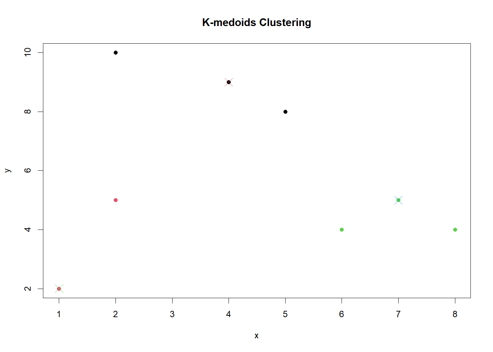
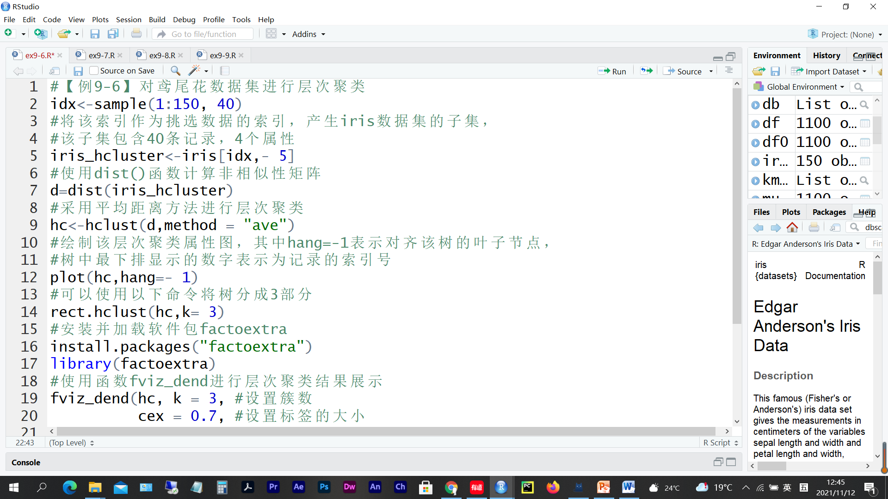
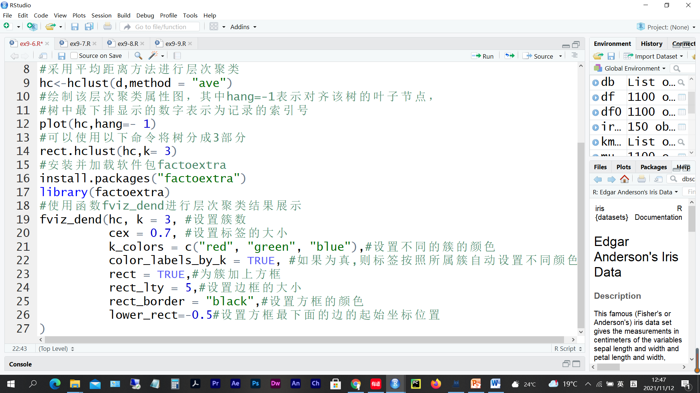
idx = sample(1:150,40)
iris_hcluster = iris[idx,-5]
d = dist(iris_hcluster)
hc = hclust(d,method = 'ave')
plot(hc,hang = -1)
rect.hclust(hc,k = 3)
install.packages("factoextra")
library(factoextra)
fviz_dend(hc, k = 3,
cex = 0.7,
k_colors = c("red", "green", "blue"),
color_labels_by_k = TRUE,
rect = TRUE,
rect_lty = 5,
rect_border = "black",
lower_rect = -0.5
)
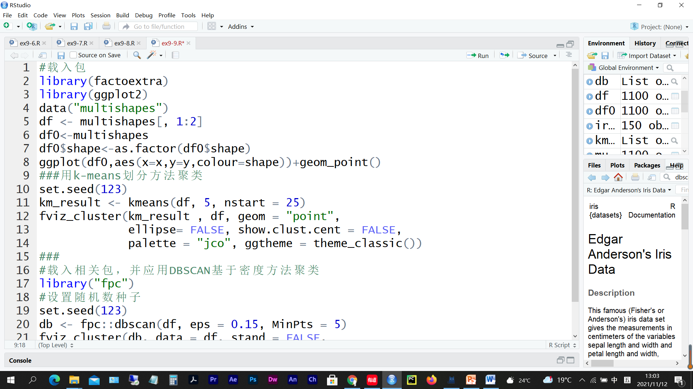
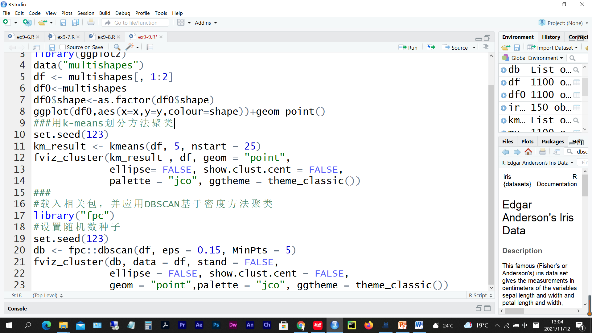
library(factoextra)
library(ggplot2)
data("multishapes")
df <- multishapes[, 1:2]
df0 <- multishapes
df0$shape <- as.factor(df0$shape)
ggplot(df0, aes(x=x, y=y, colour=shape)) + geom_point()
set.seed(123)
km_result <- kmeans(df, 5, nstart = 25)
fviz_cluster(km_result, df, geom = "point", ellipse = FALSE, show.clust.cent = FALSE, palette = "jco", ggtheme = theme_classic())
library("fpc")
set.seed(123)
db <- fpc::dbscan(df, eps = 0.15, MinPts = 5)
fviz_cluster(db, data = df, stand = FALSE, ellipse = FALSE, show.clust.cent = FALSE, geom = "point", palette = "jco", ggtheme = theme_classic())
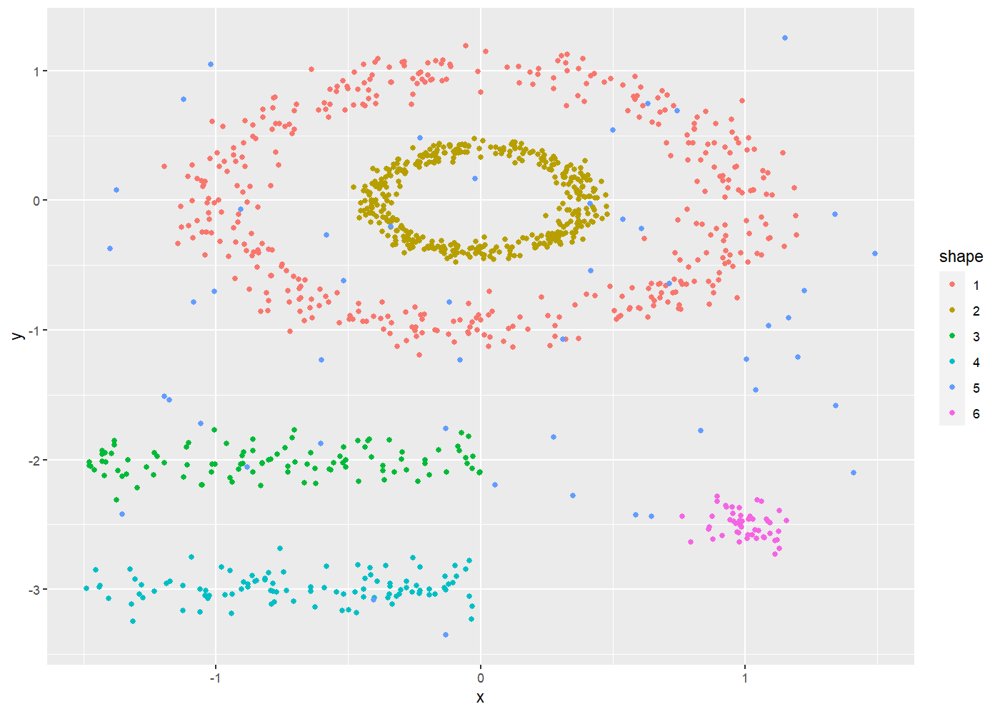
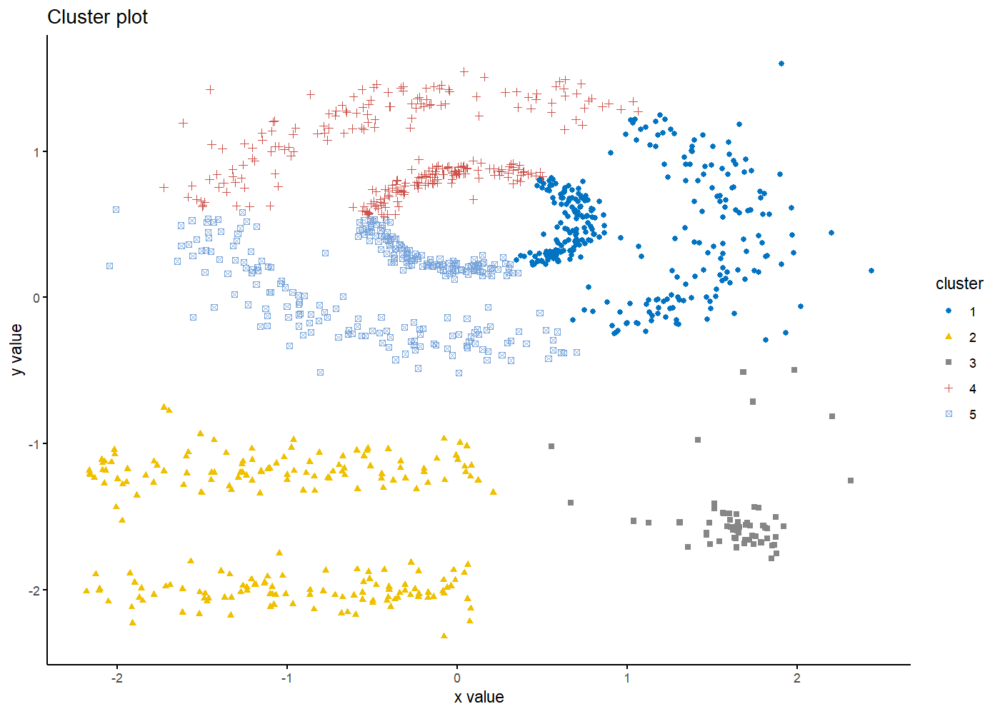
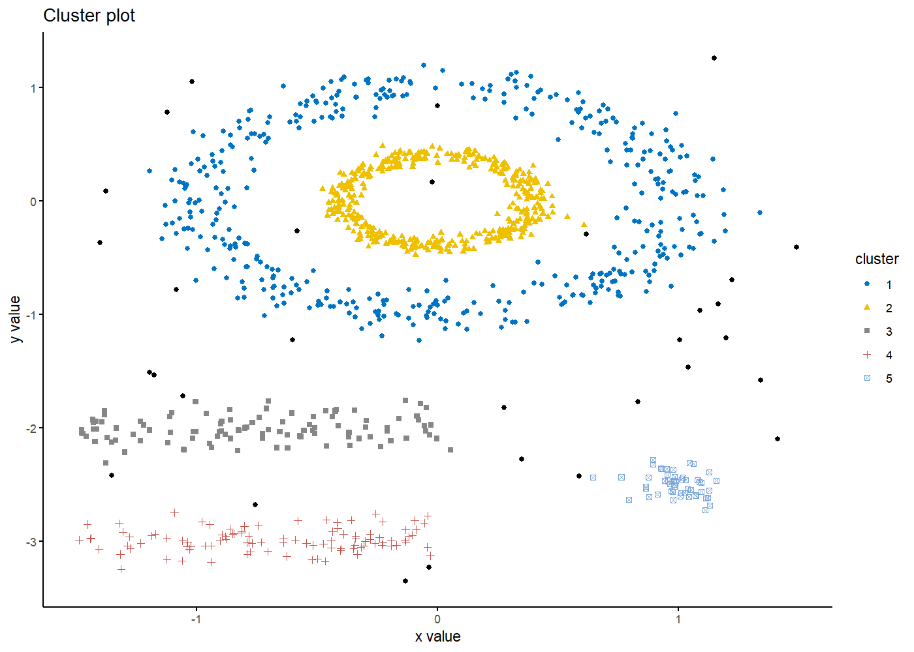
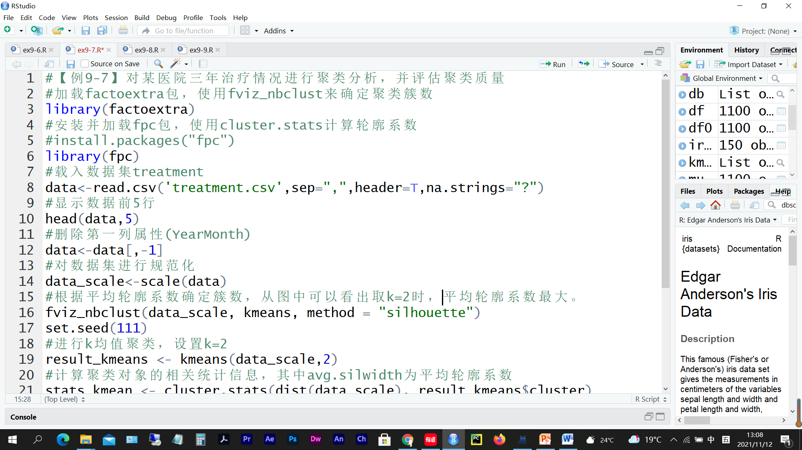
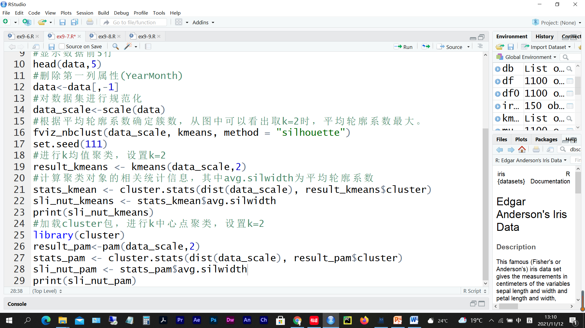
library(factoextra)
library(fpc)
data <- read.csv("treatment.csv", sep = ",", header = TRUE, na.strings = "?")
head(data, 5)
data <- data[, -1]
data_scale <- scale(data)
fviz_nbclust(data_scale, kmeans, method = "silhouette")
set.seed(111)
result_kmeans <- kmeans(data_scale, 2)
stats_kmean <- cluster.stats(dist(data_scale), result_kmeans$cluster)
sli_nut_kmeans <- stats_kmean$avg.silwidth
print(sli_nut_kmeans)
library(cluster)
result_pam <- pam(data_scale, 2)
stats_pam <- cluster.stats(dist(data_scale), result_pam$cluster)
sli_nut_pam <- stats_pam$avg.silwidth
print(sli_nut_pam)
YearMonth OutpatientNumbers DischargeNumbers BedOccupany BedTurmoverFrequency 1 2018.02 4.20 302 76.00 0.850 2 2020.01 4.10 306 78.81 0.870 3 2019.02 4.21 321 79.66 0.810 4 2018.10 4.43 321 80.00 0.822 5 2018.04 4.18 377 82.00 0.880 AverageHospitalizayionDays. CureImprovementRate Mortality DiagnosyicAccordanceRate 1 25.70 94.31 2.69 97.94 2 25.80 94.46 2.62 95.00 3 26.00 94.77 2.78 97.01 4 25.40 94.00 2.81 97.02 5 26.89 93.86 2.73 98.10 SuccessfulRescueRate 1 89.40 2 87.10 3 81.97 4 79.07 5 86.23 [1] 0.4199762 [1] 0.4270449
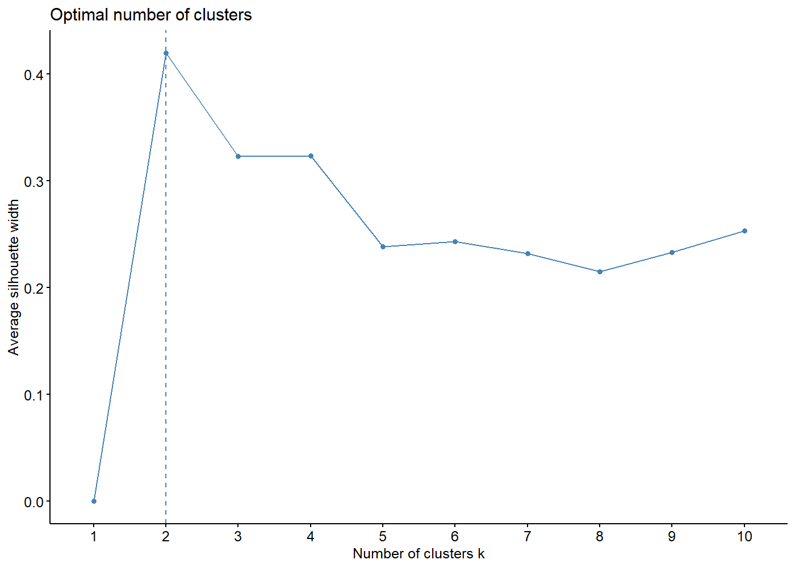
library(factoextra)
library(fpc)
library(ggplot2)
iris_sub <- iris[, 3:4]
iris_sub_scaled <- scale(iris_sub)
fviz_nbclust(iris_sub_scaled, kmeans, method = "silhouette")
km_result <- kmeans(iris_sub_scaled, 2, nstart = 25)
stats_km <- cluster.stats(dist(iris_sub_scaled), km_result$cluster)
sli_nut_km <- stats_km$avg.silwidth
print(sli_nut_km)
fviz_cluster(km_result, iris_sub_scaled, geom = "point", ellipse = FALSE, show.clust.cent = FALSE, palette = "jco", ggtheme = theme_classic())
dist_mat <- dist(iris_sub_scaled)
hc <- hclust(dist_mat, method = "ward.D2")
fviz_dend(hc, k = 2, rect = TRUE, rect_border = "black", cex = 0.7, k_colors = c("red", "green"))